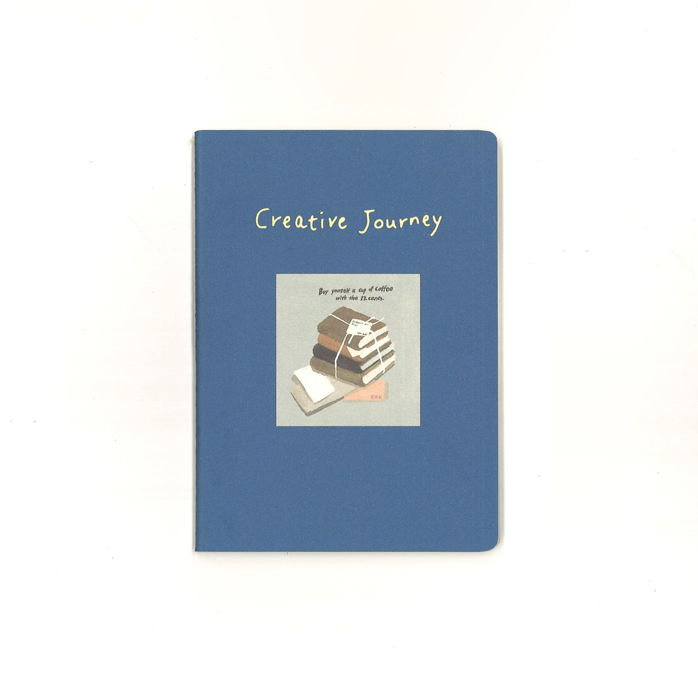
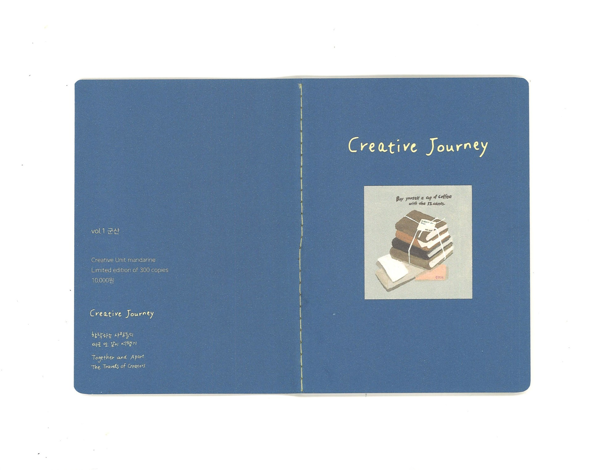
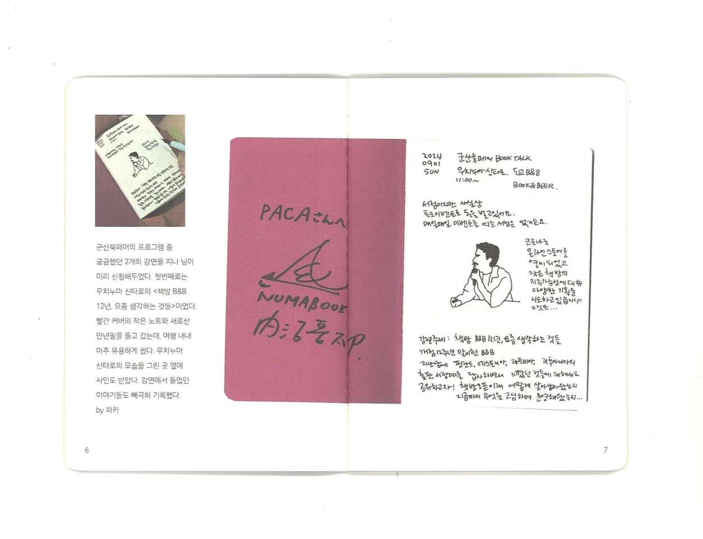
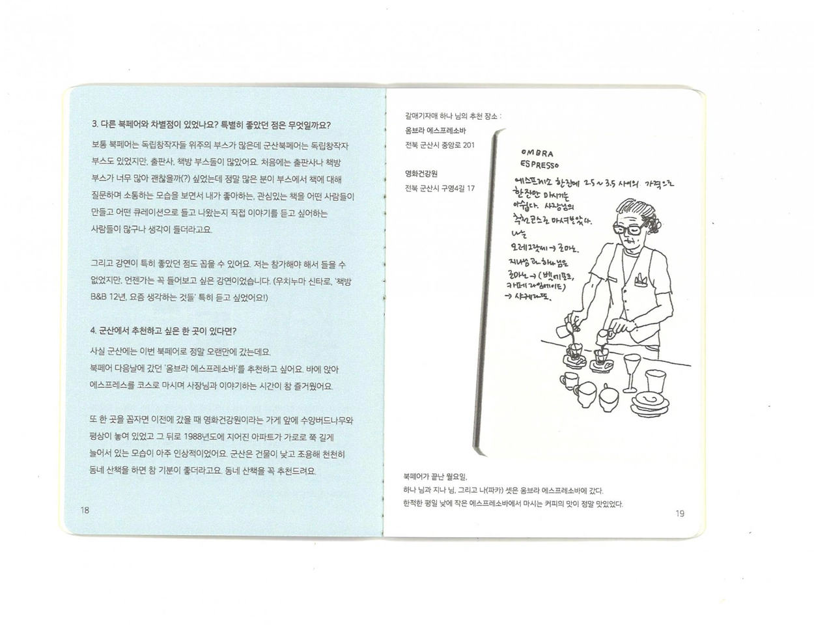
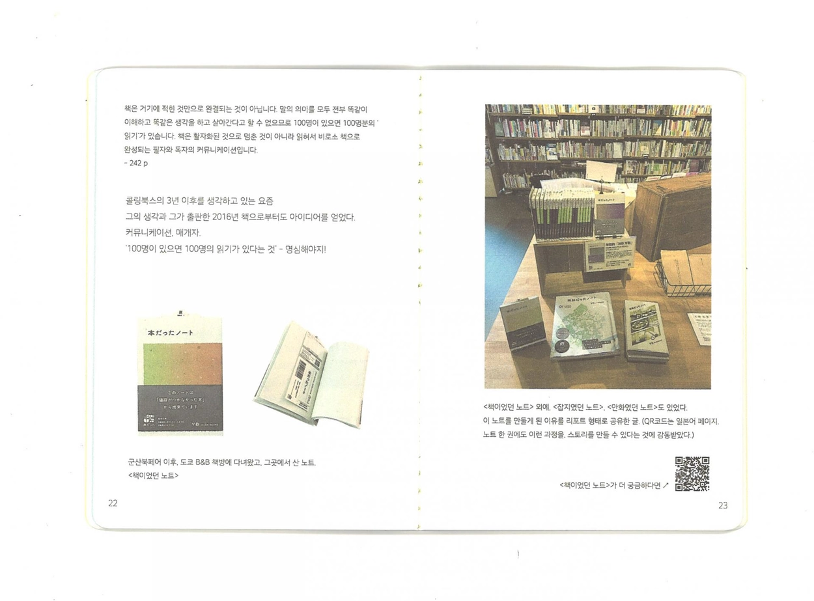
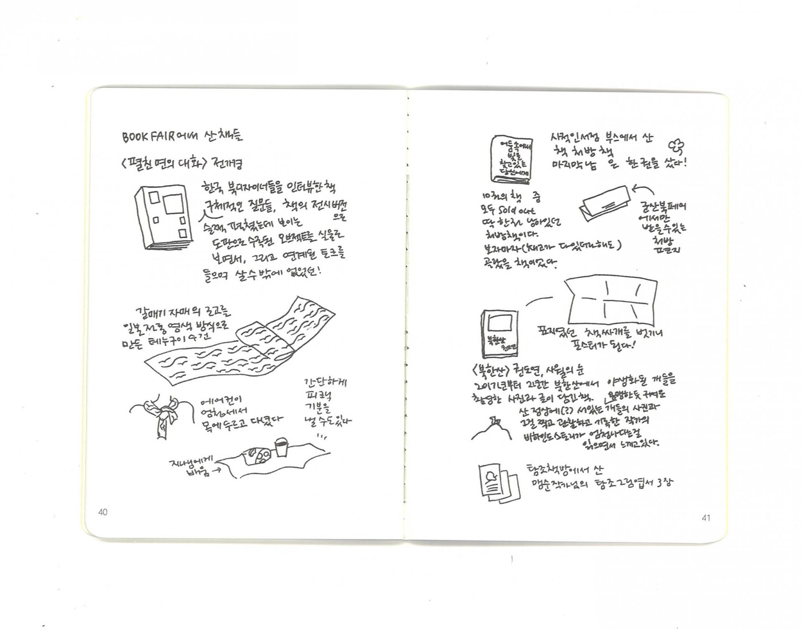
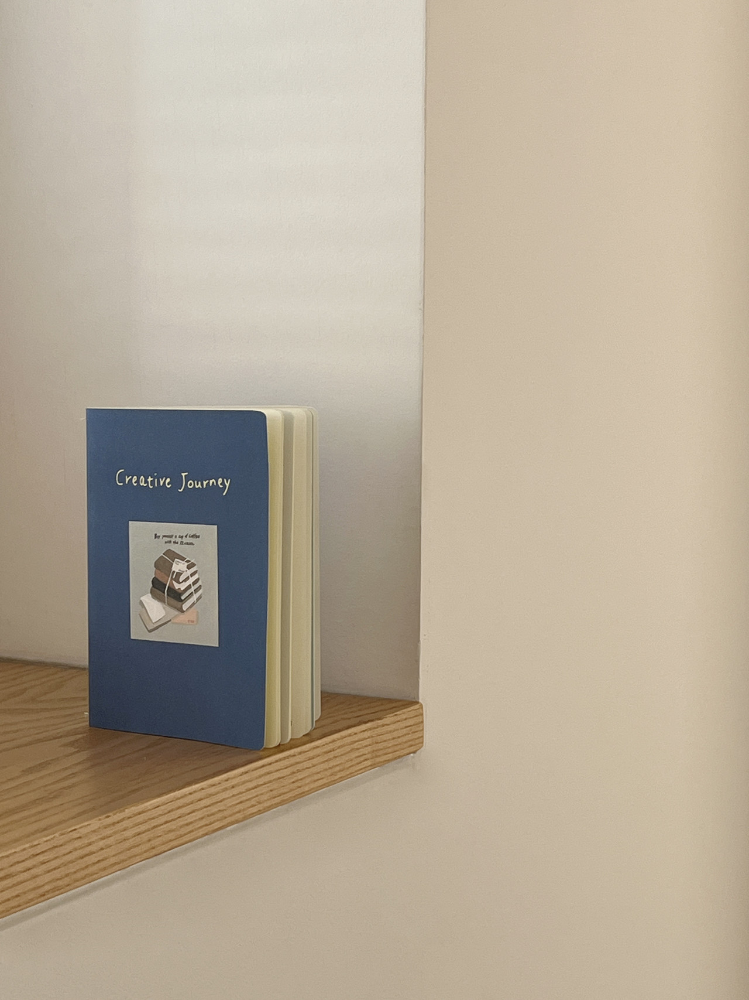

꼭 먼 곳으로 비행기를 타고, 긴 시간 떠나지 않아도 '여행'이 될 수 있는 이야기를 담아 만든 여행 모험 Zine. 조그만 수첩을 들고 떠난 여행에서 보고 듣고 발견한 생각들을 기록으로 담았습니다. 첫 번째 Creative Journey vol.1은 군산북페어를 다녀온 기록입니다. 수첩에 끄적인 기록들을 스캔한 것들, 여행에서 만난 사람들의 미니 인터뷰, 여행에서 생각한 것들, 여행의 방법 등 인상 깊은 내용과 생각들을 52페이지의 작은 수첩 사이즈로 구성하여 만들었습니다.
"지역의 북페어가 계기가 되는 여행, 우리의 목적은 오직 그것이었다."
"100명이 있으면 100명의 읽기가 있다는 것, 명심해야지"
"꼭 먼 곳으로, 비행기를 타고, 긴 시간 떠나지 않아도 '여행'이 될 수 있는 것. 그 이야기를 만들어가고 싶다."
목차 : 여행의 시작, 군산북페어 · 강연을 들으며 기록한 내용들 · 미니 인터뷰 (갈매기자매 서하나, 소설여행 허승희 대표) · 인상에 남은 것, 읽고 밑줄 그은 문장들 · 여행의 방법 · 여행에서 산 것들 · 손글씨로 쓴 에필로그
A travel adventure zine built on the idea that a "journey" doesn't have to mean a long flight to somewhere far away. It captures thoughts, discoveries, and observations from a trip taken with a small notebook in hand. The first volume documents a visit to the Gunsan Book Fair — featuring scanned notebook sketches, mini interviews with people met along the way, reflections on travel, and impressions that stayed. All gathered into a 52-page, pocket-sized zine.
Contents: The beginning of the journey / Gunsan Book Fair · Notes taken during talks · Mini interviews (Seo Hana of Galmaegi Sisters, Heo Seunghui of Novel Travel) · Things that left an impression / sentences read and underlined · The art of traveling · Things bought on the trip · Handwritten epilogue